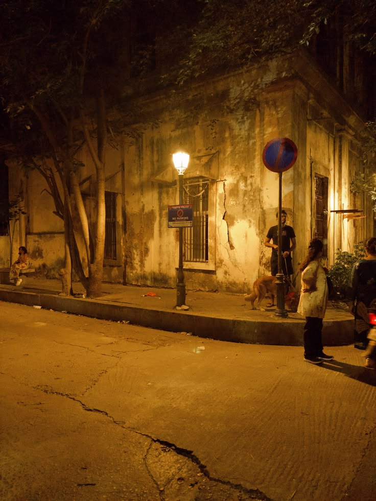
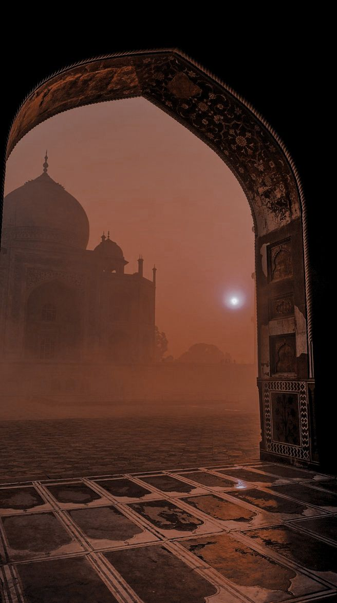
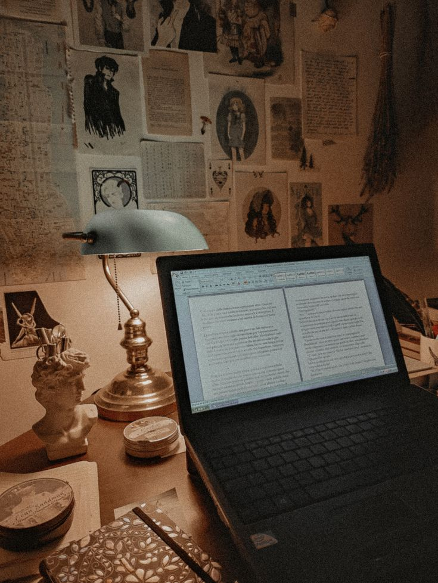

# Chapter 3 — Khud Se Jung

✦ Khud Se Jung ✦
*"Kabhi kabhi insaan ki sabse badi jung duniya se nahi... apne hi dil se hoti hai."*
Daftar ka waqt ab khatam hone ko tha.
Din bhar ki masroofiyat dheere dheere kam ho rahi thi.
Kuch log apne systems band kar chuke the...
Kuch apni files arrange kar rahe the...
Aur kuch log kal ke kaam ko lekar aapas mein baat kar rahe the.
Fahad abhi bhi apni screen ke saamne baitha hua tha.
Uski nazrein computer par thin...
Lekin zehan mein woh kaam nahi tha jo screen par khula hua tha.
Tabhi Aamina ki awaaz uske paas se aayi.
"Aapne kal jo file share ki thi..."
"Usko upload karna hai kya aaj?"
Fahad ne screen se nazar hataye baghair jawab diya.
"Nahi..."
"Abhi wait karo."
"Main bataunga."
Lehja bilkul wahi tha...
Seedha...
Sanjeeda...
Aur professional.
Woh bilkul waise hi baat karta tha...
Jaise hamesha karta aaya tha.
Na uske lehje mein koi tabdeeli thi...
Na uske rawaiye mein.
Aamina ne bas halka sa sar hilaaya.
"Ji."
Aur phir woh apne kaam ki taraf mutawajjah ho gayi.
Fahad ne bhi dobara screen ki taraf dekhna shuru kar diya.
Lekin kuch seconds tak...
Uski nazar screen par hone ke bawajood...
Uska zehan kahin aur tha.
Uske andar ek ajeeb si bechaini chal rahi thi.
Aamina se baat karna koi nayi baat nahi thi.
Woh roz usse kaam ke silsile mein baat karta tha.
Kabhi kisi file ke baare mein...
Kabhi kisi report ke baare mein...
Kabhi kisi task ko lekar.
Lekin aaj...
Har chhoti si baat bhi uske dil par kuch zyada asar kar rahi thi.
Har baar jab Aamina uske saamne se guzarti...
Fahad ko raat ka woh khwaab yaad aa jaata.
Wahi roshan jagah...
Wahi sukoon...
Wahi sajda...
Aur phir...
Us dua mein Aamina ka naam.
Woh foran apni nazar computer ki screen par jama deta.
Jaise screen par dekhna hi uske liye apne dil se bachne ka ek tareeqa ho.
Usne khud ko kitni hi baar samjhaya.
"Ye sirf ek khwaab tha."
"Iska haqeeqat se koi taalluq nahi."
"Main iske baare mein zyada nahi sochunga."
Lekin dil...
Har baar uski baat ko khamoshi se thukra deta.
Woh jitna khud ko samjhata...
Utna hi uska zehan usi taraf laut jaata.
Kabhi Aamina ki awaaz sun kar...
Kabhi uske paas se guzarte hue...
Aur kabhi sirf uska naam kisi aur ki zubaan se sun kar.
Fahad khud bhi samajh nahi pa raha tha...
Ke ek khwaab kisi insaan ke andar itni bechaini kaise paida kar sakta hai.
Shaam aur gehri ho gayi.
Office mein log ab ek ek karke nikalne lage.
Fahad ne aakhirkaar apni screen dekhi...
Jo kaam tha usse save kiya...
Phir system band kar diya.
Usne kursi se uthkar ek gehri saans li.
Bag uthaya...
Aur kandhe par daal liya.
Lekin office se nikalne se pehle...
Uski nazar ek pal ke liye Aamina ki taraf chali gayi.
Phir usne foran nazar hata li.
Jaise khud ko yaad dila raha ho...
Ke ye wahi Aamina hai...
Jise woh kal tak sirf apni team ki ek member samajhta tha.

✦ Purani Dosti & Yaadein ✦
Aur aaj...
Usi ka naam uske dil mein ek aisi bechaini ban chuka tha...
Jiska jawab khud Fahad ke paas bhi nahi tha.
Gate se bahar nikalte hi Fahad ne ek gehri saans li.
Office ke andar ki band hawa ke muqable mein bahar ki hawa kuch alag mehsoos ho rahi thi.
Sadak par hamesha ki tarah traffic chal raha tha.
Log apne apne gharon ki taraf ja rahe the.
Kisi ko train pakadne ki jaldi thi...
Kisi ko bus...
Aur koi roadside par khade hokar apne kisi jaan-pehchaan wale ka intezar kar raha tha.
Fahad ne bag ko kandhe par theek kiya hi tha ke uska mobile baj utha.
Usne jeb se mobile nikala.
Screen par ek naam chamak raha tha.
**Qasim.**
Naam dekhte hi Fahad ke honton par halki si muskurahat aa gayi.
Qasim uska purana dost tha.
Aise doston mein se...
Jinke saath baat karne ke liye kisi khaas wajah ki zarurat nahi padti.
Fahad ne foran call receive ki.
"Assalamu Alaikum."
Doosri taraf se Qasim ki awaaz aayi.
"Wa Alaikum Assalam."
Phir bina kisi tamheed ke Qasim ne poocha,
"Kahan hai?"
Fahad ne office ki building ki taraf ek nazar daali aur jawab diya,
"Bas office se nikla hoon."
"Achha..."
Qasim ki awaaz mein jaise pehle se hi koi plan tha.
"To seedha purani chai wali dukaan par aa."
Fahad thoda ruk gaya.
"Kyun?"
Qasim hans pada.
"Yaar, har baat phone par hi poochega?"
Fahad ke chehre par dobara muskurahat aa gayi.
"To phir bata na..."
"Bas aa ja."
"Kuch hua hai kya?"
"Nahi."
"Phir?"
"Tu aa raha hai ya main phone rakhun?"
Fahad halka sa hans pada.
"Theek hai..."
"Thodi der mein pahunchta hoon."
"Bas, ye hui na baat."
Qasim ne jawab diya.
"Main wahi hoon."
"Achha."
"Allah Hafiz."
"Allah Hafiz."
Call kat gaya.
Fahad ne mobile wapas jeb mein rakha.
Kuch lamhon tak woh wahi khada raha.
Phir bag kandhe par theek kiya...
Aur Qasim se milne ke liye chal pada.
Fahad aur Qasim ki dosti aaj ki nahi thi.
Saat saal pehle...
Dasvin class mein dono ki pehli mulaqat hui thi.
Shuru shuru mein woh sirf classmates the.
Ek doosre ko jaante the...
Kabhi class mein baat ho jaati...
Kabhi kisi homework ya padhai ki wajah se.
Phir pata hi nahi chala ke kab dono ek hi bench par baithne lage.
Aur ek bench se shuru hui woh dosti...
Dheere dheere itni gehri ho gayi ke log unhe sirf dost nahi...
Bhai samajhne lage.
Zindagi mein kitne hi log aaye...
Kitne hi chale gaye...
Kuch log kuch waqt ke liye kareeb aaye...
Aur phir waqt ke saath door hote chale gaye.
Lekin Fahad aur Qasim ki dosti...
Waqt ke saath kabhi nahi badli.
Fahad ke ghar ke halaat...
Uski zimmedariyan...
Uski pareshaniyan...
Aur uski zindagi ki woh baatein jo woh har kisi se nahi keh sakta tha...

✦ Bharose Ki Amanat ✦
Qasim sab jaanta tha.
Kabhi Fahad ko kuch kehne ki zarurat bhi nahi padti thi.
Uske chehre se hi Qasim samajh jaata tha ke baat kya hai.
Aur Qasim ki zindagi ka bhi koi aisa raaz nahi tha...
Jo Fahad se chhupa ho.
Usne jo kuch Fahad ko bataya...
Fahad ke paas woh sab amanat ki tarah mehfooz raha.
Dono ke beech ek aisa bharosa tha...
Jisme lafzon se zyada waqt aur saath ki ahmiyat thi.
Ek waqt aisa bhi tha...
Jab Qasim ko Mahira naam ki ek ladki pasand thi.
Qasim ne ye baat Fahad se chhupayi nahi thi.
Aur Fahad hi un dono ke darmiyan zariya bana tha.
Lekin ek saal baad...
Mahira ke ghar walon ko sab pata chal gaya.
Aur uske baad...
Woh rishta wahi khatam ho gaya.
Qasim ke liye woh waqt aasaan nahi tha.
Lekin waqt...
Har cheez ko dheere dheere apni jagah par la deta hai.
Kuch waqt baad Mahira ki yaad bhi...
Sirf ek yaad ban kar reh gayi.
Fahad ne bhi kabhi Qasim ko us baat ke liye chheda nahi.
Jo ho gaya tha...
Woh ho gaya tha.
Aur dono apni zindagi mein aage badh gaye.
Aaj dono ki zindagi mein...
Ladkiyon ke naam par sirf apni maa aur behnein hi thi.
Mohabbat...
Nikah...
Ya ishq ki baatein...
Ye sab unki rozmarra ki guftagu ka hissa kabhi nahi bani.
Unki duniya filhaal bahut simple thi.
Kaam...
Ghar...
Dost...
Aur kabhi waqt mila to ek cup chai ke saath kuch der ki baatein.
Bas itni si duniya thi un dono ki.
Aur dono ko lagta tha...
Ke zindagi isi tarah chalti rahegi.
Kuch der baad Fahad usi purani chai ki dukaan par pahunch gaya.
Qasim pehle se wahin maujood tha.
Woh apni hamesha wali kursi par baitha chai ka cup haath mein liye Fahad ka intezar kar raha tha.
Fahad ko dekhte hi usne saamne wali kursi ki taraf ishara kiya.
"Baith."
Fahad bina kuch kahe uske saamne jaakar baith gaya.
Chai wale ne dono ko dekhte hi bina pooche do chai laga di.
Ye bhi unki purani aadat thi.
Saat saal ki dosti mein kuch cheezein kehni nahi padti thin.
Chai aayi...
Aur dono roz ki tarah idhar-udhar ki baaton mein lag gaye.
Kabhi office ki baat...
Kabhi kisi purane dost ka zikr...
Kabhi bas aise hi kisi baat par hansna.
Fahad bhi normal rehne ki poori koshish kar raha tha.
Lekin Qasim...
Aaj use thoda zyada gaur se dekh raha tha.
Kuch der baad usne chai ka cup neeche rakha.
Phir Fahad ki taraf seedha dekhte hue bola...
"Aaj kal tu kuch alag lag raha hai."
Fahad ne cup haath mein lete hue hairani se uski taraf dekha.
"Main?"
"Haan... tu."
Fahad ke honton par halki si muskurahat aayi.
"Pata nahi."
Qasim ne aankhein thodi sikod kar use dekha.
"Kuch khoya khoya sa lag raha hai."
Fahad halka sa hans diya.
"Tera waham hai."
Qasim bhi muskuraya...
Lekin uski nazar ab bhi Fahad ke chehre par hi thi.
"Saat saal ho gaye tujhe jaante hue."
Fahad chup raha.
Qasim ne chai ka ek ghunt liya aur aahista se kaha...
"Tera chehra dekh kar bata sakta hoon kab tu pareshan hota hai."
✦ Taqdeer Ka Naya Safha ✦
Fahad ne nazrein chai ke cup par kar li.
Aur pehli baar...
Usse mehsoos hua ke shayad Qasim ki nazar uske dil tak pahunchne lagi hai.
Fahad ne mehsoos kiya ke Qasim ki baat ab kahin aur ja rahi hai.
Usne foran baat badalne ki koshish ki.
"Achha chhod..."
"Tu kuch bol raha tha."
Qasim ne chai ka cup table par rakha.
"Haan..."
"Ek baat bolni thi."
Fahad ne uski taraf dekha.
"Bolo."
Qasim kuch pal khamosh raha.
Phir jaise achanak use kuch yaad aaya ho, usne kaha...
"Us din jab main tujhe lene office aaya tha..."
Fahad ne sir hilaya.
"Haan."
"Woh teri office wali..."
Qasim ne baat adhoori chhodi.
Fahad ne beparwai se poocha...
"Aamina?"
"Haan..."
"Uska kya hua?"
Qasim ke honton par halki si shararti muskurahat aa gayi.
"Yaar..."
"Main jab bhi tere office aata hoon..."
"Use dekhta hoon."
Fahad chup-chaap uski baat sunta raha.
Qasim ne chai ka cup uthaya, lekin peene ke bajaye use haath mein hi pakde rakha.
"Us din dil kar raha tha..."
"Uske paas jaaun..."
"Usse salaam karun..."
"Aur bolun..."
Qasim ne ek pal ruk kar Fahad ki taraf dekha.
Phir bilkul masoomiyat se bola...
"Assalamu Alaikum, Bhabhi."
Ek pal ke liye dono ke darmiyan khamoshi chha gayi.
Fahad ne Qasim ko dekha...
Jaise use yakeen hi na ho ke usne abhi kya keh diya.
Phir agle hi pal woh zor se hans pada.
"Pagal hai kya?"
"Har parde wali ladki tujhe meri biwi hi lagti hai?"
Qasim ne beparwai se kandhe uchka diye.
"Pata nahi..."
"Bas ladki bahut shareef lagti hai."
"Isliye dil se nikal gaya."
Fahad ne muskurate hue sir hila diya.
"Tu bhi na..."
Phir usne chai ka cup uthaya aur aahista se bola...
"Mere paas itna waqt nahi hai."
"Ghar ki zimmedariyan hi itni hain..."
"Nikah ke baare mein sochna bhi abhi mumkin nahi."
Qasim ne is baar mazaak nahi kiya.
Usne Fahad ki baat khamoshi se suni.
Woh jaanta tha ke Fahad apni zindagi ko lekar kitna sanjeeda hai.
Kuch lamhon baad Qasim ke chehre par phir halki si muskurahat aayi.
Usne chai ka aakhri ghunt piya aur cup table par rakh diya.
"Jo Allah ki marzi."
Fahad ne bas itna hi kaha...
"Haan."
Us waqt...
Ye sirf do purane doston ke darmiyan hui ek maamooli si guftagu thi.
Na Fahad ke dil mein Aamina ke liye koi jazba tha...
Na Qasim ki baat ka uske liye koi khaas matlab.
Dono ke liye woh bas ek mazaak tha...
Ek chhoti si baat...
Jo chai ki us purani dukaan par kahi gayi aur wahi reh gayi.
Magar insaan jo baat mazaak mein keh deta hai...
Kabhi kabhi waqt usi baat ko haqeeqat bana kar saamne khada kar deta hai.
Aur us waqt...
Taqdeer khamoshi se apna agla safha likh rahi thi.